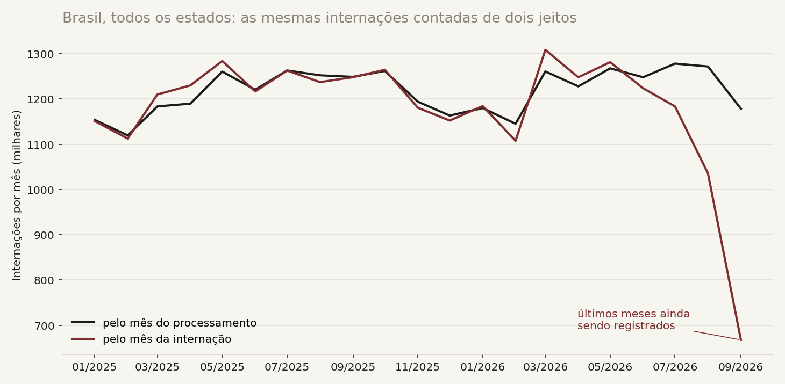
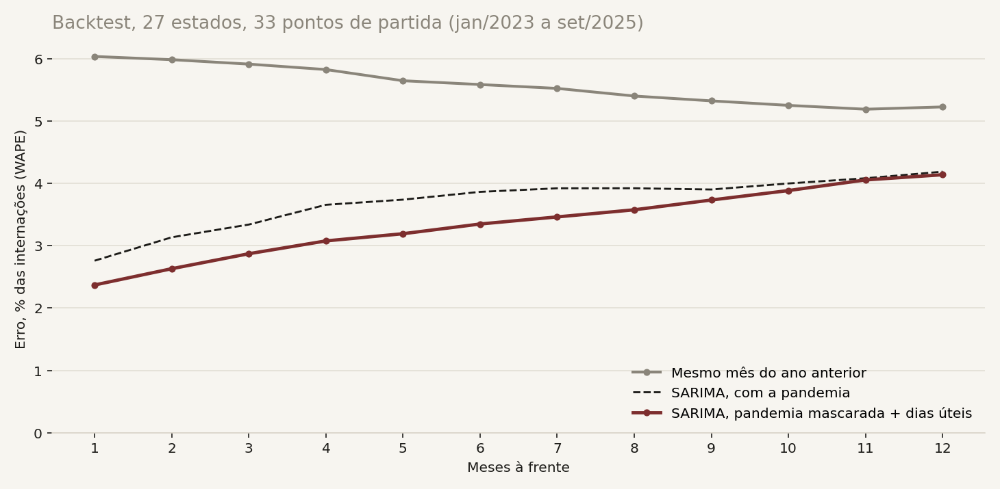
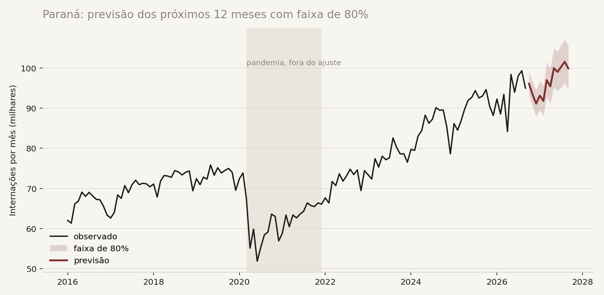

Previsão de Internações Hospitalares
Séries temporais · SARIMA sazonal · Backtest com origem móvel · Faixas de 80% conferidas · Python · 19 testes
A pergunta de negócio
Leitos, escalas de enfermagem, insumos e o orçamento por trás deles são comprometidos com meses de antecedência, e tudo depende de um número: quantos pacientes vão ser internados. Secretaria de saúde, rede hospitalar e operadora de plano enfrentam a mesma pergunta.
A resposta de costume é o número do mesmo mês do ano anterior, ajustado no olho. É simples e é uma referência justa. A pergunta aqui é quanto um modelo acerta a mais em meses que ele não viu, e se a faixa em volta da previsão merece confiança na hora de dimensionar uma equipe com ela.
Os dados
Dados públicos do DATASUS: todas as internações pagas pelo SUS, contadas por estado e por mês, de janeiro de 2008 a setembro de 2026. São 27 séries, e cerca de 1,2 milhão de internações por mês no país inteiro.
As mesmas internações podem ser contadas pelo mês em que o paciente foi internado ou pelo mês em que a conta do hospital foi processada. A primeira parece a escolha óbvia. Para os meses mais recentes, ela está errada, porque os hospitais mandam os registros com atraso:

Um modelo ajustado sobre essa linha veria a demanda despencar no terceiro trimestre de 2026. Nada despencou; a papelada atrasou. A previsão usa o mês de processamento.
O mês de processamento tem a sua própria falha: de vez em quando o lote de um estado não chega. O Acre aparece com zero internações em agosto e setembro de 2026, e Roraima cai de cerca de 4.000 por mês para 517 e depois para zero. São registros que faltam, não pacientes que faltam.
O método, e por que esse
Dado que falta é tratado como falta. Um mês abaixo de 60% da mediana dos 12 anteriores é tratado como um lote que não chegou e fica de fora. A regra olha só para trás, então funciona no mês mais recente. Ela marca 9 meses em 3 estados.
A pandemia fica fora do ajuste. De março de 2020 a dezembro de 2021 as cirurgias eletivas pararam e depois foram retomadas. Esses meses descrevem um choque, não o padrão sazonal que a previsão precisa reproduzir, então o modelo os pula como se faltassem.
Um modelo simples, com o calendário como única informação de fora. SARIMA sazonal sobre o log das internações, a especificação conhecida como modelo airline, com o número de dias úteis de cada mês como regressor. Internação eletiva acontece em dia útil, e um fevereiro com Carnaval tem dois dias úteis a menos do que um sem. O calendário é conhecido com antecedência, então a previsão pode usá-lo de forma honesta. Incluí-lo reduz o erro dos três primeiros meses de 2,82% para 2,62% do volume.
Testado do jeito que seria usado. Em cada uma de 33 datas, de janeiro de 2023 a setembro de 2025, o modelo é reajustado com os dados disponíveis naquela data e prevê os 12 meses seguintes, para todos os estados. São 891 previsões de 12 meses para avaliar. A referência passa exatamente pelo mesmo teste. Cada decisão acima tem a sua variante no teste, então o efeito dela é medido, não suposto.
A medida de erro é o WAPE: erro absoluto total dividido pelo total de internações. Ele se lê como “errou X% do volume”, e os estados pequenos não dominam a conta.
O resultado

| Erro, % das internações (WAPE) | 1 a 3 meses | 4 a 6 meses | 7 a 12 meses |
|---|---|---|---|
| Mesmo mês do ano anterior | 5,98 | 5,69 | 5,32 |
| Modelo, com a pandemia | 3,08 | 3,75 | 4,00 |
| Modelo, sem a pandemia | 2,82 | 3,35 | 3,92 |
| Modelo, sem a pandemia, com dias úteis | 2,62 | 3,21 | 3,81 |
Nos três primeiros meses o erro cai a menos da metade, de 6,0% para 2,6% do volume. O modelo vence a referência nos 27 estados. No total de 12 meses, o número em que um orçamento se apoia, o erro típico é de 2,7% contra 4,5%, e nos 10% piores casos, 7,0% contra 9,1%.
A diferença maior está na faixa em volta da previsão. Uma faixa de 80% deveria conter o valor real cerca de 80% das vezes. Com a pandemia nos dados, o modelo aprende que o mundo pode desabar a qualquer momento. A faixa fica com largura de 15% a 27% da previsão e contém o valor real de 87% a 96% das vezes. Um plano dimensionado por ela carrega leitos e equipe de que não vai precisar. Sem a pandemia, a faixa tem largura de 10% a 16% e contém o valor real de 80% a 83% das vezes, que é o que ela promete.
A previsão dos próximos doze meses, com o Paraná de exemplo:

Cerca de 1,16 milhão de internações nos doze meses, 3,8% a mais do que nos doze anteriores. O repositório tem a mesma previsão para todos os estados.
Os limites fazem parte do resultado. Estados pequenos são difíceis para qualquer modelo: Roraima e Amapá ficam acima de 16% de erro. O total por estado é o nível certo para uma secretaria de saúde, enquanto um hospital precisa do mesmo processo no seu próprio recorte dos dados. E a janela da pandemia foi definida à mão. Um choque desse tamanho pediria a mesma decisão de novo.
Aplicado aos seus dados
Este é o pacote de Previsão sob Medida com dados públicos: internações aqui e, no seu caso, demanda, sinistros, exames ou inadimplência. Os passos são os mesmos: achar o que nos dados é artefato de registro, vencer uma referência simples em meses que o modelo não viu e entregar uma faixa que cumpre o que promete.
O código
github.com/rhozon/hospital-admissions-forecast
Com Python 3.11 ou mais recente:
pip install -e ".[dev]"
pytest -v
python -m admissions.cli backtest
python -m admissions.cli forecast
python -m admissions.cli figures
python -m admissions.cli fetch # atualiza os dados a partir do DATASUSO repositório traz uma cópia dos dados do DATASUS, então o backtest se reproduz sem internet. A suíte tem 19 testes, entre eles um teste do leitor sobre saída real do DATASUS e contagens de dias úteis conferidas à mão. O CI roda os testes a cada push, seguidos de um backtest curto. O README em inglês lista as decisões de projeto e os limites.